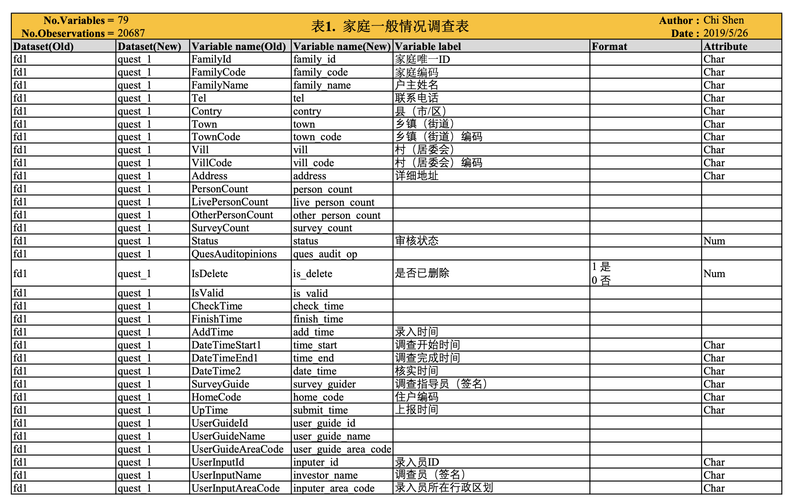
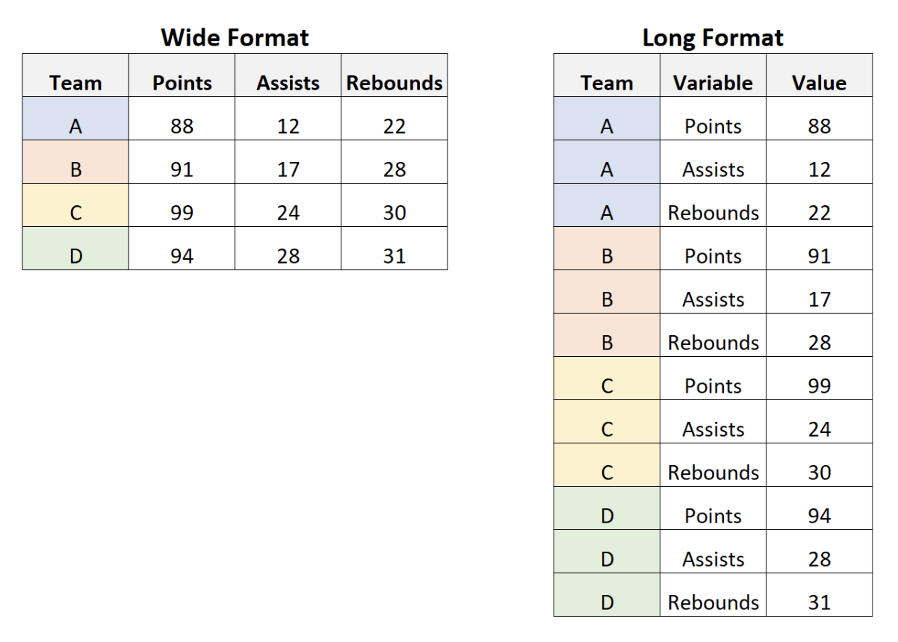

flowchart LR
A[Collection] --> B(Digitalization)
B --> C{Clean}
C --> D[Analysis]
D --> E[Presentation]
在数据的发展历程中有过两次革命。第一次数据革命是近代科学诞生之时，实现了数据与科学研究的融合，数据在科学研究中的基础地位得到确立。对研究过程和结果赋予精确化的诉求，是近代科学的基本特征之一。在以数据为依据的研究范式中，数据的可靠性和准确性代表了研究的精确性，人们甚至将以数据为依据的实证研究作为判断 “科学”与“伪科学”的标准。第二次数据革命发生于因信息技术的发展而导致数据产生的速度和规模急剧发展之时，它不仅改变着科学研究范式，实现社会科学研究的定量化，也将促使经济、社会、军事等所有社会领域产生巨大的变革。1因此，掌握数据的分析能力是现代社会科学研究必须要掌握的技能。
现实社会中产生的数据是纷繁复杂的，有时甚至是杂乱无章的，并非我们所设想的那样拿到数据就可以跑模型。它需要经过一系列的处理过程，这个处理过程一般称作数据操作（Data Manipulate或者Data Wrangle）。在定量实证研究中，接近70%到80%的时间都需要花费在数据的清洗和预处理阶段 (Dasu and Johnson 2003)，然而很多青年学者都容易忽视这部分工作的重要性，而现实情况是，数据分析是没有捷径可以走的，机器学习也无法完成这部分工作，数据的质量决定了研究的质量，否则就是”Garbage in, Grabage out“。
一个基于数据开展实证研究（不论定性或是定量）的基本流程至少都应该包含以下步骤：
flowchart LR
A[Collection] --> B(Digitalization)
B --> C{Clean}
C --> D[Analysis]
D --> E[Presentation]
不过，随着互联网技术的发展，现阶段基本可以采用一些调查工具将采集和数字化两个阶段同时进行，比如最常用的问卷星、腾讯问卷。国外的话有SurveyMonkey和LimeSurvey，也可以基于RedCap搭建自有的调查系统。
在介绍数据采集原则之前，先说一下数据的分类，当然这里不讨论统计学上对数据的分类（如定性、定量、计数、计量等等），而是按照数据产生的途径将数据进行分类。我个人理解可以归纳为三类；
调查数据（Survey data）：也就是通过针对个人或者机构的调查获得的数据，调查研究是开展社会科学研究的最主要方式，如田野调查、问卷调查、访谈等等。
行为数据（Behavioral data）：即记录人或者机器行为的数据，如日常的网购数据、出行数据、够药数据、医保账户使用数据等等，最早应用于商业领域的用户行为分析。
统计数据（Administration data）：即政府或者机构对于涉及经济、社会和日常职能业务相关的指标进行按时间加总之后的数据，如金融情况、财政情况、教育资源、卫生资源等等，严格来说统计数据是基于调查数据和行为数据进行聚合、统计、校正之后形成的。
我将三种数据的优缺点总结如 表 tbl-datasource
| 数据类型 | 优点 | 缺点 |
|---|---|---|
| 调查数据 | 1.容易组织，指的是小样本调查； 2.调查内容和质量相对可控； 3.分析简单。 |
1.调查成本高，特别是大样本人群调查； 2.回忆偏倚、调查者偏倚、访员偏倚等不可避免。 |
| 行为数据 | 1.样本大，通常为海量数据； 2.时间和空间尺度细腻。 |
1.获取较难，通常被机构和平台掌握； 2.对分析技能要求高； 3.通常混有非真实数据，如网购中的刷单，医保中的骗保等。 |
| 统计数据 | 1.较易获取。 | 1.真实性难以验证； 2.时间和空间尺度粗糙； 3.指标不够丰富。 |
数据库（Database）设计主要针对的是将调查问卷电子化，虽然这个工作看似简单，但是其对于后续的数据清洗和数据分析十分关键。如果数据库设计得不够合理，会给后续工作带来很多麻烦。很多研究人员往往都忽视了数据库设计的重要性。
下面针对以上三点分别举几例：
关于数据库中变量设计最常见的就是多选题的变量设置，如对于以下一个多选题：
您经常选择就诊的医疗机构有哪些？（多选）：1.村卫生室；2.诊所；3.卫生院；4.县区医院；5.省市医院。假设受访者回答；1，3，4。
关于数据库的设计应该与调查问卷的设计同步进行，是为了保证提前对数据库和问卷进行检验和修订，及时对问卷中设置不合理的问题进行调整。若不同步进行就可能会带来一个问题，也就是在调查完成之后再进行数据库的建立，就很有可能在数据录入的过程中发现问卷中的问题难以在数据库中采取合理的方式进行录入。这一点对于采取电子化调查一样适用，因为问卷的形成通常是通过Word先完成的，电子化调查只是将数据调查过程和录入过程进行了合并。
在说明数据库的版本管理为何重要之前，我们可以假设这样一个场景：
有一项调查研究，需要历时5年，每一年进行一次追踪调查，每次调查完成之后进行数据的电子化，但是在第2年和第4年对问卷进行了补充和修订（这样的操作很常见）。
变量名的命名是指为变量赋予一个简短的字符，用于在统计软件中作为变量的识别符号，一般需要遵循以下几项原则：
尽量通过简短的单词或者符号来反映出变量的含义，推荐用英文单词。比如简单的：编号(id)、姓名(name)、性别(sex)，复杂一点的：家庭年收入(family_income)。这里不提倡用拼音的原因是为了保证研究的国际化，在研究过程中进行国际交流是十分常见的，如果采用拼音会在与国外的研究者进行交流时产生阻碍。同时也不提倡采用var1、var2这种没有规律的命名方式，因为难以对应出变量本身代表的含义。
变量名不可用数字或者下划线开头，也不可包含. * ？- ！～等特殊字符。
变量名的长度最好不要超过32个字符，如果过长会在统计分析的coding过程中增加不必要的键盘敲击量，增加额外的负担，影响效率。
变量名可以采用驼峰命名法(familyIncome)、双峰命名法(FamilyIncome)、下划线法(family_income)等规则，不同的项目中会选择不同的命名规则，重要的是保持一致，尽量不要在同一个数据库或者项目中混合采用不同的命名方式。
数据字典（Data dictionary）也称作Codebook或者Specification，是指详细记录数据库中的变量名、变量内容、变量取值、变量标签、变量属性等信息，其作用主要是为了方便统计分析过程中检查和查看变量。
数据字典可以手动整理，也可以通过统计软件中的函数生成，如Stata中的codebook命令，R中也有codebookr和datadictionary两个package。
下面给出一个我之前整理的codebook示例，如 图 fig-codebook1 和 图 fig-codebook2


入门工具：EpiData，这个基本是各个学校开设数据库管理课程都会讲到的一个工具，但是EpiData比较古老了，如果没记错应该是从2008年之后就再未更新过。
普通线上工具：问卷星、腾讯问卷，能满足基本的数据库建立需求，但是对于较大型的研究一般不推荐。
专业线上工具：推荐LimeSurvey，有Cloud版和社区版，社区版可以通过自行搭建在云服务器或者本地服务器上。
综合数据与分析平台：推荐RedCap(Research Electronic Data Capture)，RedCap是由范德堡大学Paul Harris教授团队自2004年开发的一个成熟开源、安全可靠、网络化的在线临床研究和试验数据库管理程序，基本国内外知名高校均搭建有自己服务器，西安交通大学也有，如下：
数据读取是数据清洗和数据分析的第一步。为什么要单独把这一部分拿出来详细说明，是因为数据库管理工具通常与统计分析软件是分割开的。当然这里有一个例外，那就是MS EXCEL，很多人会把EXCEL既当成数据管理工具（虽然不推荐）又当作统计分析软件。数据读取虽然是很简单的一个操作，但是通常情况下会由于中文字符编码（Encoding）等问题导致在不同的统计软件之间转换时浪费一些时间和精力，所以有必要拿出来讲一讲。
尽管现在的数据管理软件，不管是古老的EpiData或是时下流行的RedCap，都可以支持直接导出适用于不同统计分析软件的特定格式，比如dta（支持Stata）、sas7bat（支持SAS）、sav（支持SPSS），但是我个人还是强烈推荐以CSV格式作为中介，因为几乎所有的统计软件都支持CSV数据格式。
顺带简单说一下目前在社会科学研究领域主要用的统计软件，如 表 tbl-statsoftware 。我个人推荐R和Python，因此后文关于coding部分均是基于R的。
| 软件名 | 说明 | 推荐指数 | 是否收费 |
|---|---|---|---|
| SPSS | 入门基础款 | * | 收费 |
| Stata | 最流行款，学习门槛低，硬件要求低 | *** | 收费 |
| SAS | 较流行，公共卫生领域研究人员使用多 | ** | 收费 |
| R | 开源，学习门槛较高，第三方工具丰富 | *** | 免费 |
| Python | 开源，学习门槛高，第三方工具较丰富 | ** | 免费 |
在R中读取不同的数据格式还是相对比较方便的，主要有两种方式：
read.csv()。read_csv()read_excel()SAS: read_sas() reads .sas7bdat + .sas7bcat files and read_xpt() reads SAS transport files (version 5 and version 8).
SPSS: read_sav() reads .sav files and read_por() reads the older .por files. write_sav() writes .sav files.
Stata: read_dta() reads .dta files (up to version 15). write_dta() writes .dta files (versions 8-15).
由于以上package和函数都比较简单，参看官方文档之后就能熟练使用，因此不详细赘述。通过以上tidyverse系列的三个package，在R中基本可以应对绝大多数的数据读取问题。
另外，对于数据量较大的情况，如百万或者千万级别的数据记录条数时，以上package中的函数会耗时较多，遇到这种情况，推荐使用data.table中的fread()函数处理。尽管data.table是不同于tidyverse的另一套对于数据库的操作体系，但是data.table同时具备data.frame的属性，兼容tidyverse语法。
但是，fread()函数有一个不足之处，就是字符编码只支持UTF-8和Latin，无法支持中文字符常见的gb18030编码，略显遗憾。
批量读取数据是在统计分析过程中很常见的一个需求，具体分为两种情况。
如，在一个名为data的的文件夹中有365个CSV文件，分别命名为china_cities_20210101…china_cities_20211231，分别记录了全国所有地级市每一天的空气质量数据，现在需要对空气质量进行分析，那么第一步就需要将这365个文件读取并整合进一个数据库中，面对这个问题，你首先会想到如何处理呢？
这里提供两种思路：
根据文件命名，可以发现其中有一定的规律，也就是每个文件名自由最后的数字在变动，并且是按日期累加，那么就可以直接利用循环进行读取，因为思路较简单，代码略。
以上这种情况并不常见，有时很难从文件名中发现规律，那么就只能先想办法获取所有文件名称，然后进行循环读取。
list.files()函数进行获得（代码如下），其中path参数指定的是文件夹路径，pattern参数指定的是文件类型，其中*是通配符。map()函数，其实purrr是R自带的apply()函数族的高阶版本，由于是CSV文件，因此map()函数中FUNC参数使用readr包中read_csv()函数。map()函数返回的是一个列表list，因此可以通过do.call()函数对list中的对象进行递归。map_dfr()直接省略第三步。#---------Mehotd 1---------------#
csv_list <- paste0(dir, list.files(path = dir,
pattern = "*.csv"))
df_list <- purrr::map(csv_list, readr::read_csv,
locale = locale(encoding = "UTF-8"))
df <- do.call(rbind, df_list)
#---------Mehotd 2---------------#
csv_list <- paste0(dir, list.files(path = dir,
pattern = "*.csv"))
df <- purrr::map_dfr(csv_list, readr::read_csv,
locale = locale(encoding = "UTF-8")) 这种情况在现实中更为常见，处理思路基本同上，第一步依然是获取所有Sheet的名称。这里需要使用readxl包中的excel_sheets()函数，具体代码如下：
sheet_name <- readxl::excel_sheets("datasets.xlsx")
df <- purrr::map_dfr(sheet_name,
readxl::read_excel,
path = "datasets.xlsx")map_dfr()函数将文件合并，如果不一致，建议使用map()函数先保存为列表list，然后根据不同的分析需求进一步处理。这一节的内容其实和 sec-tidy 关联比较紧密，通常会用在Tidy Data的整理过程中。数据库转换其实就是对数据库的行（Row）和列（Column）进行的一系列操作，可以对数据库的结构进行改变。
也称作数据库的重构（Reshape），本质是对长数据（Long）和宽数据（Wide）形式之间进行转换。先简单说明一下长数据（Long）和宽数据（Wide）：
长数据（Long）：不是指行比列多，虽然通常情况下这种数据结构确实是行比列多，但本质是指同一个个体2有多条观测值，比如面板数据（Panel data）就是长数据。英文表述可能更清楚：A “long” dataset contains more than one row per subject, and uses a unique ID to identify each subject.
宽数据（Wide）：与长数据相对的形式，比较好理解了，就是每个个体只有一条观测值。
从网上借了一张图，很清晰的说明了长款数据之间的差异，如 图 fig-6：

在数据分析过程中，进行长宽数据之间的转换是经常会有的需求，这时你可能就会问了，比如呢！比如 表 tbl-panel，一个微观调查的数据库，当在回归中需要控制时间固定效应时，你肯定希望数据是 表 tbl-panel-long 形式，而当需要计算两次wave调查的income的差值时，你肯定希望数据是 表 tbl-panel-wide 形式。
表 2.3: 长宽数据转换需求示例
| ID | wave | income |
|---|---|---|
| 001 | Wave 1 | 1500 |
| 001 | Wave 2 | 2000 |
| 002 | Wave 1 | 2200 |
| 002 | Wave 2 | 2800 |
| ID | wave1 | wave2 |
|---|---|---|
| 001 | 1500 | 2000 |
| 002 | 2200 | 2800 |
常见的统计软件也都提供了数据库长宽转换的方法，只是易用性方面有所不同。比如，Stata中有reshape命令，而在R中，目前用得最为广泛的是tidyr包中的pivot_longer()和pivot_wider()函数，而之前这两个函数的功能是由另外两个函数：gather() 和 spread()提供的，由于后两个函数不容易被记住（这是Hadley Wickham的原话），所以Wickham就重写了这两个函数。
pivot_longer()和pivot_wider()函数的功能在官方文档中解释得非常清楚了，直接搬运如下：
pivot_longer() makes datasets longer by increasing the number of rows and decreasing the number of columns.
pivot_longer() is commonly needed to tidy wild-caught datasets as they often optimise for ease of data entry or ease of comparison rather than ease of analysis.
以上两个函数的使用方式都特别简单和直观，参考官方文档即可，在此不再赘述，仅提供一个例子作为演示，这里还是使用 表 tbl-panel 的例子
survey <- data.frame("ID" = c("001", "001",
"002", "002",
"003", "003"),
"wave" = rep(c("Wave 1",
"Wave 2"), 3),
"income" = c(1500, 2000,
2200, 2800,
3000, 2400)
)
knitr::kable(survey)| ID | wave | income |
|---|---|---|
| 001 | Wave 1 | 1500 |
| 001 | Wave 2 | 2000 |
| 002 | Wave 1 | 2200 |
| 002 | Wave 2 | 2800 |
| 003 | Wave 1 | 3000 |
| 003 | Wave 2 | 2400 |
library(tidyr)
survey_wide <- pivot_wider(survey,
names_from = "wave",
values_from = "income")
knitr::kable(survey_wide)| ID | Wave 1 | Wave 2 |
|---|---|---|
| 001 | 1500 | 2000 |
| 002 | 2200 | 2800 |
| 003 | 3000 | 2400 |
survey_long <- pivot_longer(survey_wide,
cols = c("Wave 1", "Wave 2"),
names_to = "wave",
values_to = "income")
knitr::kable(survey_long)| ID | wave | income |
|---|---|---|
| 001 | Wave 1 | 1500 |
| 001 | Wave 2 | 2000 |
| 002 | Wave 1 | 2200 |
| 002 | Wave 2 | 2800 |
| 003 | Wave 1 | 3000 |
| 003 | Wave 2 | 2400 |
数据库的连接分为两大类：
在统计软件中一般使用merge()函数的较多，比如Stata和R中都具备此命令或者函数。不过现在使用join系列函数的比较多，可能更多的是为了和SQL语言统一，比如R中dplyr包提供了join_**()系列函数。横向连接一共分为六种情况，这里就用从网上借的一张 图 fig-join 来说明:
从图中可以很清晰地看出不同联接方式的差异。dplyr包中的join_**()系列函数也十分友好，查看官方文档之后就可以很快熟练使用，在此不再举例说明。

df <- df1 %>%
left_join(df2, by = "a") %>%
left_join(df3, by = "a")reduce()函数df <- purrr::reduce(list(df1, df2, df3),
left_join,
by = "a") 纵向联接也有多种方法如R自带base包提供的rbind()函数，功能相对比较基本，以及dplyr包中的系列函数，如下：
union()：获得两个数据库行（Row）的并集，但会剔除重复的行。union_all()：获得两个数据库行（Row）的并集，但会保留重复的行。intersec()：获得两个数据库行（Row）的交集，也就是只保留重复的行。setdiff()：获得两个数据库行（Row）的差集，也就是只保留第一个数据库中与第二个数据不一样的行。具体示例如下：
df1 = data.frame("id" = c(1:6),
"product" = c(rep("Oven", 3),
rep("Television", 3)))
df2 = data.frame("id" = c(4:7),
"product" = c(rep("Television", 2),
rep("Air conditioner", 2)))示例数据集的基本情况如 表 tbl-union-demo 。
knitr::kable(df1)
knitr::kable(df2)表 2.7: 示例数据集
| id | product |
|---|---|
| 1 | Oven |
| 2 | Oven |
| 3 | Oven |
| 4 | Television |
| 5 | Television |
| 6 | Television |
| id | product |
|---|---|
| 4 | Television |
| 5 | Television |
| 6 | Air conditioner |
| 7 | Air conditioner |
#---#
df_union <- dplyr::union(df1, df2)
knitr::kable(df_union)
#---#
df_union_all <- dplyr::union_all(df1, df2)
knitr::kable(df_union_all)
#---#
df_ints <- dplyr::intersect(df1, df2)
knitr::kable(df_ints)
#---#
df_setdiff <- dplyr::setdiff(df1, df2)
knitr::kable(df_setdiff)表 2.8: 纵向联接操作
| id | product |
|---|---|
| 1 | Oven |
| 2 | Oven |
| 3 | Oven |
| 4 | Television |
| 5 | Television |
| 6 | Television |
| 6 | Air conditioner |
| 7 | Air conditioner |
| id | product |
|---|---|
| 1 | Oven |
| 2 | Oven |
| 3 | Oven |
| 4 | Television |
| 5 | Television |
| 6 | Television |
| 4 | Television |
| 5 | Television |
| 6 | Air conditioner |
| 7 | Air conditioner |
| id | product |
|---|---|
| 4 | Television |
| 5 | Television |
| id | product |
|---|---|
| 1 | Oven |
| 2 | Oven |
| 3 | Oven |
| 6 | Television |
筛选观测值，或者称作筛选行（Row），是非常常见的数据库操作，但是也比较简单，主要是和条件语句（Condition）结合使用。在Stata里就是通过keep、drop、in等命令进行行筛选操作。在R里主要有两种方法：
subset()函数，或者切片等方法。filter()函数。 筛选变量（Variable），也称作筛选列（Column）），同样是非常常见的数据库操作，一样也很简单。在Stata里也可以通过keep、drop等命令进行列筛选操作，是的你没看错，这两个命令可以同时进行行和列筛选。在R里主要有两种方法：
subset()函数，或者切片等方法，是的你还是没看错，此方法可以同时进行行和列筛选。select()函数，特别可以注意一下与starts_with()、ends_with()、contains()等函数联用3，可以极大提高变量选择的效率。另外，select()函数现在有三个拓展函数select_all()、select_at()、select_if()，针对不同的使用场景，如下：
select_if()：如果需要一次性筛选所有的数值型变量，那么可以df %>% select_if(is.numeric)select_at()：如果需要对符合特定条件的变量进行某种操作，那么可以select_at(vars(-contains("ar")), toupper)上一节中主要讲述的是在不改变数据观测层级的情况下，对于数据库的一系列操作。然而在实际数据分析过程中，经常会遇见需要改变数据观察层级的情况。比如对一个以个人为最小观测单元的数据库，需要计算家庭或者县域为单位的平均收入，这种操作通常被称为数据聚合（Data Aggregating）。
最常见的聚合运算就是：求均数、标准差、中位数、最大值、最小值、四分位数等。因为相对简单，在此就不再举例。这类运算的特点就是得到的新数据库观测值明显少于原始数据库。
需要注意的是，由于在15.0版本以前的Stata中每次只可读取一个数据库，当进行聚合运算时，运算结果通常以结果的形式输出在命令对话框中，尽管15.0版本以后增加了frame命令，可以实现将聚合运算结果同时存储在另一个数据库，但是操作十分不便利。然而，在很多场景下，需要再次调用聚合运算结果，这个时候在Stata中操作就相对复杂。
聚合运算很多时候都会与分组计算相结合，正如前文所举例一样，很多统计软件也提供了类似by的操作方法，这里只对R中的实现方法进行介绍。与之前一样，分组计算在R中有base语法和tidyverse语法两种实现方式：
aggregate()函数进行分组运算，示例如下：如 表 tbl-mtcars 展示了datasets包中自带的一个数据集，可以看出一共有31个变量。
library(datasets)
data(mtcars)
knitr::kable(head(mtcars))| mpg | cyl | disp | hp | drat | wt | qsec | vs | am | gear | carb | |
|---|---|---|---|---|---|---|---|---|---|---|---|
| Mazda RX4 | 21.0 | 6 | 160 | 110 | 3.90 | 2.620 | 16.46 | 0 | 1 | 4 | 4 |
| Mazda RX4 Wag | 21.0 | 6 | 160 | 110 | 3.90 | 2.875 | 17.02 | 0 | 1 | 4 | 4 |
| Datsun 710 | 22.8 | 4 | 108 | 93 | 3.85 | 2.320 | 18.61 | 1 | 1 | 4 | 1 |
| Hornet 4 Drive | 21.4 | 6 | 258 | 110 | 3.08 | 3.215 | 19.44 | 1 | 0 | 3 | 1 |
| Hornet Sportabout | 18.7 | 8 | 360 | 175 | 3.15 | 3.440 | 17.02 | 0 | 0 | 3 | 2 |
| Valiant | 18.1 | 6 | 225 | 105 | 2.76 | 3.460 | 20.22 | 1 | 0 | 3 | 1 |
假设现在需要计算不同的cyl气缸数（Number of cylinders）对应的hp马力（Gross horsepower）的均值，则可以：
mtcars_hp_mean <- aggregate(hp ~ cyl,
data = mtcars,
FUN = mean)
knitr::kable(head(mtcars_hp_mean))| cyl | hp |
|---|---|
| 4 | 82.63636 |
| 6 | 122.28571 |
| 8 | 209.21429 |
group_by()函数，结合管道函数（pipe function, %>%）和summarise()函数可以实现变量的分组运算，示例如下：library(dplyr)
mtcars_hp_mean <-
mtcars %>%
group_by(cyl) %>%
summarise(hp_mean = mean(hp))
knitr::kable(head(mtcars_hp_mean))| cyl | hp_mean |
|---|---|
| 4 | 82.63636 |
| 6 | 122.28571 |
| 8 | 209.21429 |
以上示例只是最基础的分组运算，在实际数据处理过程中，可以实现很丰富的需求。